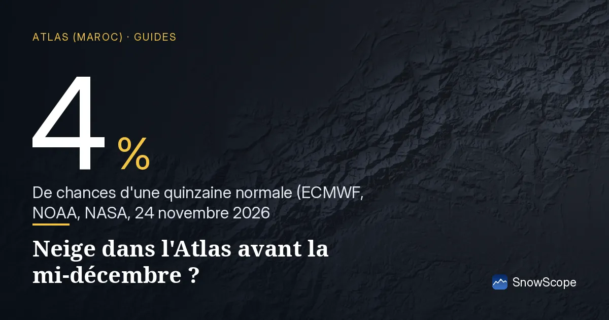
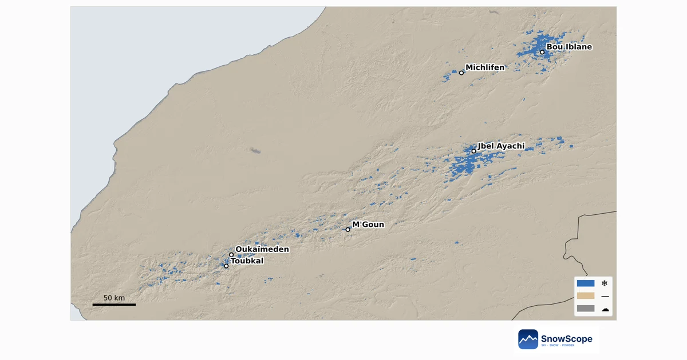

Neige dans l'Atlas avant la mi-décembre ? 4 % de chances d'une quinzaine normale (ECMWF, NOAA, NASA, 24 novembre 2026)
L'Atlas commence l'hiver presque nu. MODIS (NASA) n'a vu de la neige que sur 2 931 km² au-dessus de 1 500 m entre le 16 et le 23 novembre, soit 6 % du sol visible, surtout sur les plus hauts sommets. Décembre va-t-il changer la donne ? Nous avons analysé l'ensemble complet ECMWF du 24 novembre (50 membres, 15 jours), l'ensemble NOAA GEFS pour les jours 16 à 21 et la prévision NOAA de l'oscillation nord-atlantique. Réponse courte : les deux prochaines semaines s'annoncent sèches, avec seulement 4 % des membres au-dessus d'une fin novembre et d'un début décembre normaux, et un léger espoir, incertain, pour la deuxième semaine de décembre.
Consultez les prévisions neige en temps réel pour Oukaïmeden sur l'application SnowScopeHauteurs de neige, alertes poudreuse et carte 3D, gratuitement.

La neige au sol aujourd'hui : NASA MODIS
L'Atlas est un cas facile pour un capteur optique : le ciel était dégagé sur 98 % du relief le 20 novembre et sur 92 % le 23 novembre. En combinant Terra (matin) et Aqua (après-midi) et en gardant la dernière vue dégagée de chaque pixel de 500 m, 92 % du sol a été vu le 23 novembre même.
Au-dessus de 1 500 m, MODIS compte 2 931 km² de neige et 48 948 km² de sol nu. Selon l'altitude : 3 % de blanc entre 1 500 et 1 750 m, 8 % entre 2 000 et 2 250 m, 13 % entre 3 000 et 3 250 m et 31 % au-dessus de 3 500 m. Aucune tranche de 250 m n'est majoritairement blanche : pas encore de limite de la neige, seulement des plaques sur les massifs du Toubkal et du M'Goun. Gascoin et ses collègues ont montré avec les mêmes produits MODIS que ces couvertures automnales en plaques sont fréquentes dans l'Atlas.

Les 15 prochains jours : l'ensemble ECMWF
Nous avons cumulé les chutes de neige de chacun des 50 membres sur la grille de 0,25°. Sur les mailles de montagne au-dessus de 1 500 m, la moyenne d'ensemble est de 0,1 mm d'eau sous forme de neige du 24 au 30 novembre, pour une normale de 1,6 mm, et de 0,9 mm du 1er au 8 décembre pour 2,7 mm. Avec une neige fraîche d'environ 100 kg/m³ (Judson et Doesken 2000), 1 mm d'eau donne environ 1 cm de neige : 0,9 cm sur la quinzaine contre 4,4 cm normalement.
La probabilité est la part des membres au-dessus de la normale, P = (1/N) Σ 1[S_i > normale], avec N = 50. Sur l'ensemble de l'Atlas : 4 %. Oukaïmeden (maille à 2 045 m) : médiane 0 cm, dixième le plus neigeux 0,8 cm, normale 2,7 cm, chance au-dessus de la normale 6 %. M'Goun (maille à 2 723 m) : médiane 1 cm, dixième le plus neigeux 8,3 cm, normale 7,2 cm, chance 14 %. Jbel Ayachi : médiane 0,9 cm pour une normale de 7,9 cm, chance 4 %. Dans le Moyen Atlas, Michlifen et Bou Iblane n'ont que 2 % de membres au-dessus de la normale.
Même quand il précipite, l'altitude compte. À la maille d'Oukaïmeden, seuls 25 % des précipitations prévues tombent en neige ; à la maille plus haute du M'Goun, 84 %. Cette part de neige φ = S / P est le chiffre à surveiller : les mailles sont bien plus basses que les sommets (la maille du Toubkal est à 2 315 m, le sommet à 4 167 m).

Jours 16 à 21 : NOAA GEFS
Pour le 9 au 14 décembre, nous avons utilisé les 16 membres complets du GEFS du 24 novembre, en ne comptant les précipitations de 6 heures que lorsque l'indicateur de neige du membre est actif (S = Σ P6h · CSNOW). Sur l'Atlas, 25 % des membres dépassent la normale de ces six jours, avec une moyenne de 2,7 mm pour 2,1 mm. Près d'Oukaïmeden et du Toubkal : 3,4 mm pour une normale de 1,5 mm, 25 % de membres au-dessus ; au M'Goun 31 %.
Cette moyenne est tirée vers le haut par deux ou trois membres neigeux sur 16, et à 16-21 jours un membre est un scénario, pas une prévision (Vitart 2014). Lecture honnête : la porte s'entrouvre pour la deuxième semaine de décembre, sans plus.
Pourquoi l'oscillation nord-atlantique compte pour le Maroc
L'essentiel de la neige de l'Atlas vient de dépressions atlantiques qui plongent au sud de leur trajectoire habituelle, ce qui arrive bien plus souvent quand la NAO est négative (Hurrell 1995 ; Knippertz et al. 2003). La prévision GEFS de la NAO est d'abord positive, +0,97 le 26 novembre et +0,96 le 27, ce qui colle au signal sec. À partir du 1er décembre elle redescend vers -0,29, avec 60 % des jours-membres négatifs à partir du jour 8, mais l'intervalle 10e-90e percentile au jour 15 va encore de -1,04 à +0,83.
Une NAO nettement négative dans les prévisions des prochains jours serait le premier signe d'un vrai changement. Cassou (2008) a montré que l'oscillation de Madden-Julian sous les tropiques peut déclencher ces phases négatives une dizaine de jours plus tard.

Pourquoi c'est important au-delà du ski
Dans les bassins du Tensift et de l'Oum Er-Rbia, la neige est un réservoir d'eau. Boudhar et al. (2009) ont montré que la fonte fait une grande partie du débit de printemps des rivières du Haut Atlas, et Baba et al. (2018) ont reconstitué l'équivalent en eau de la neige du bassin de l'Ourika de 2000 à 2018 avec les données MERRA-2 de la NASA et les cartes MODIS, puis l'ont affiné avec Sentinel-2. Un mois de décembre sans neige n'est pas perdu, les grandes tempêtes arrivant souvent en janvier et février, mais chaque semaine sèche raccourcit la saison d'accumulation.
Chaque chiffre de cet article vaut pour une maille d'environ 25 km, dont l'altitude moyenne est 1 000 à 2 000 m sous les sommets. Les rapports à la normale de la même maille sont fiables ; les centimètres bruts sur un sommet ne le sont pas.

Conseils aux skieurs
- Ski à Oukaïmeden avant la mi-décembre : attendez-vous à de la neige de culture et des plaques seulement, sauf changement des prévisions.
- Surveillez la NAO : une valeur nettement négative dans les prévisions à 10 jours annonce l'arrivée des tempêtes atlantiques sur le Maroc.
- Trekking en altitude (Toubkal, M'Goun) : temps surtout sec et froid, plaques de glace en face nord, peu de neige fraîche.
- Nous mettons ces probabilités à jour avec les nouvelles prévisions ; au-delà de 10 jours, un seul run peut beaucoup changer.
Références et crédits
- ECMWF open data: IFS ensemble forecasts (ENS), run of 24 November 2026 00 UTC, 0.25° grid, snowfall and total precipitation (CC BY 4.0) www.ecmwf.int/en/forecasts/datasets/open-data
- Zhou, X. et al. (2022). The development of the NCEP Global Ensemble Forecast System version 12. Weather and Forecasting 37, 1069-1084 doi.org/10.1175/WAF-D-21-0112.1
- NOAA Global Ensemble Forecast System (GEFS) open data on AWS: run of 24 November 2026 00 UTC, 0.5° grid, APCP and CSNOW registry.opendata.aws/noaa-gefs/
- Hersbach, H. et al. (2020). The ERA5 global reanalysis. Quarterly Journal of the Royal Meteorological Society 146, 1999-2049 (monthly means 1991-2020, Copernicus Climate Change Service) doi.org/10.1002/qj.3803
- NOAA Climate Prediction Center: daily NAO, AO, PNA and AAO index forecasts from the GEFS ensemble www.cpc.ncep.noaa.gov/products/precip/CWlink/
- Knippertz, P., Christoph, M. and Speth, P. (2003). Long-term precipitation variability in Morocco and the link to the large-scale circulation in recent and future climates. Meteorology and Atmospheric Physics 83, 67-88 doi.org/10.1007/s00703-002-0561-y
- Hurrell, J.W. (1995). Decadal trends in the North Atlantic Oscillation: regional temperatures and precipitation. Science 269, 676-679 doi.org/10.1126/science.269.5224.676
- Cassou, C. (2008). Intraseasonal interaction between the Madden-Julian Oscillation and the North Atlantic Oscillation. Nature 455, 523-527 doi.org/10.1038/nature07286
- Vitart, F. (2014). Evolution of ECMWF sub-seasonal forecast skill scores. Quarterly Journal of the Royal Meteorological Society 140, 1889-1899 doi.org/10.1002/qj.2256
- Boudhar, A., Hanich, L., Boulet, G., Duchemin, B., Berjamy, B. and Chehbouni, A. (2009). Evaluation of the Snowmelt Runoff Model in the Moroccan High Atlas Mountains using two snow-cover estimates. Hydrological Sciences Journal 54(6), 1094-1113 ird.hal.science/ird-00491127
- Baba, M.W., Gascoin, S., Jarlan, L., Simonneaux, V. and Hanich, L. (2018). Variations of the snow water equivalent in the Ourika catchment (Morocco) over 2000-2018 using downscaled MERRA-2 data. Water 10, 1120 doi.org/10.3390/w10091120
- Baba, M.W., Gascoin, S. and Hanich, L. (2018). Assimilation of Sentinel-2 data into a snowpack model in the High Atlas of Morocco. Remote Sensing 10, 1982 doi.org/10.3390/rs10121982
- Gascoin, S., Hagolle, O., Huc, M., Jarlan, L., Dejoux, J.-F., Szczypta, C., Marti, R. and Sánchez, R. (2015). A snow cover climatology for the Pyrenees from MODIS snow products. Hydrology and Earth System Sciences 19, 2337-2351 doi.org/10.5194/hess-19-2337-2015
- Riggs, G.A., Hall, D.K. and Román, M.O. (2019). MODIS Snow Products Collection 6.1 User Guide. NASA / NSIDC nsidc.org/sites/default/files/c61_modis_snow_user_guide.pdf
- NASA Global Imagery Browse Services (GIBS): MODIS_Terra_NDSI_Snow_Cover and MODIS_Aqua_NDSI_Snow_Cover, 16-23 November 2026 www.earthdata.nasa.gov/engage/open-data-services-software/earthdata-developer-portal/gibs-api
- Copernicus DEM GLO-90 (European Space Agency, Copernicus programme) doi.org/10.5270/ESA-c5d3d65
- Judson, A. and Doesken, N. (2000). Density of freshly fallen snow in the central Rocky Mountains. Bulletin of the American Meteorological Society 81, 1577-1587 doi.org/10.1175/1520-0477(2000)081<1577:DOFFSI>2.3.CO;2
À propos de ces chiffres
Neige : ensemble ECMWF (50 membres, 0,25°) jusqu'au jour 15, NOAA GEFS (16 membres, 0,5°) pour les jours 16 à 21, comparés à la normale 1991-2020 des mêmes jours. Neige au sol : NASA MODIS, dernière vue dégagée du 16 au 23 novembre.
Citer ce bulletin
Pour la recherche, l'enseignement ou la presse : chiffres et graphiques réutilisables librement sous CC BY 4.0 avec cette citation.
SnowScope (2026), Neige dans l'Atlas avant la mi-décembre ? 4 % de chances d'une quinzaine normale (ECMWF, NOAA, NASA, 24 novembre 2026), https://snowscope.app/blog/fr/2026/11/atlas-snow-outlook-next-3-weeks-ecmwf-noaa-24-november-2026.html, consulté le 2026-11-24
SnowScope (Atlas Labs). (2026, November 24). Neige dans l'Atlas avant la mi-décembre ? 4 % de chances d'une quinzaine normale (ECMWF, NOAA, NASA, 24 novembre 2026). SnowScope snow reports. https://snowscope.app/blog/fr/2026/11/atlas-snow-outlook-next-3-weeks-ecmwf-noaa-24-november-2026.html
BibTeX
@misc{snowscope2026atlassnowoutlooknext3wee,
author = {{SnowScope (Atlas Labs)}},
title = {Neige dans l'Atlas avant la mi-décembre ? 4 % de chances d'une quinzaine normale (ECMWF, NOAA, NASA, 24 novembre 2026)},
year = {2026},
month = nov,
howpublished = {\url{https://snowscope.app/blog/fr/2026/11/atlas-snow-outlook-next-3-weeks-ecmwf-noaa-24-november-2026.html}},
note = {Published 2026-11-24 16:40 UTC; accessed 2026-11-24}
}· CC BY 4.0 · Méthodes, données et outils →
Suivre Oukaïmeden
Gratuit : un message quand la neige arrive, et la météo chaque matin.
Autres bulletins neige

Le 15 décembre à Michlifen, 89 % des hivers sont presque sans neige. Les meilleures chances arrivent après une tempête, pas selon le calendrier. Données du 13 novembre 2026.

Décembre n'apporte que 18 cm de profondeur typique à mi-montagne à Oukaimeden, contre 53 cm en mars. Le début de saison est maigre mais possible. Données du 13 novembre 2026.

Pas encore de neige à Oukaïmeden le 12 novembre. Les pics de l'Atlas sont dénudés ; la saison hivernale atteint généralement son apogée en mars avec 58 cm au sommet.